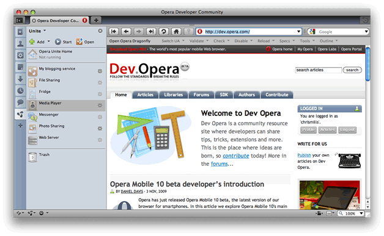
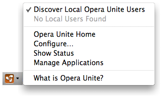
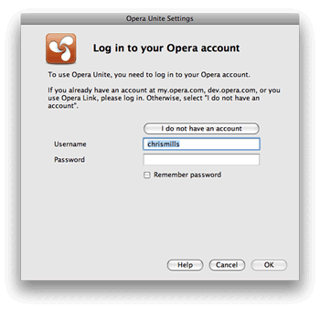
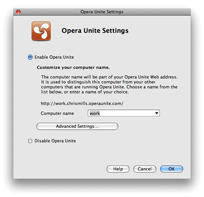
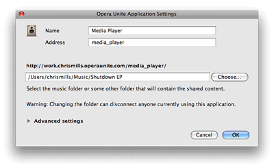
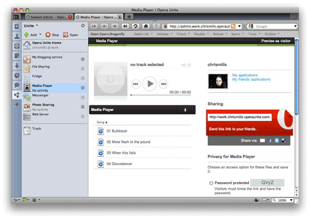
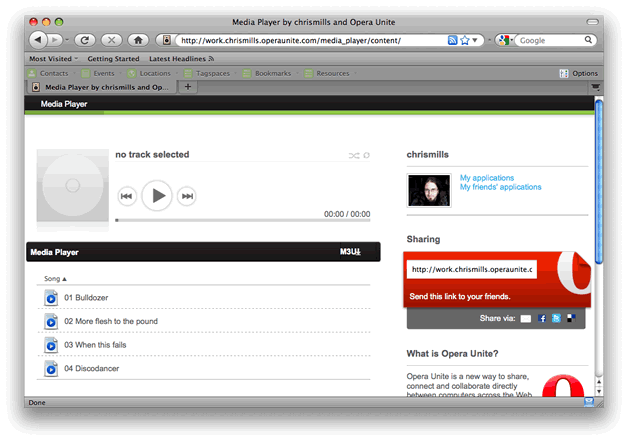
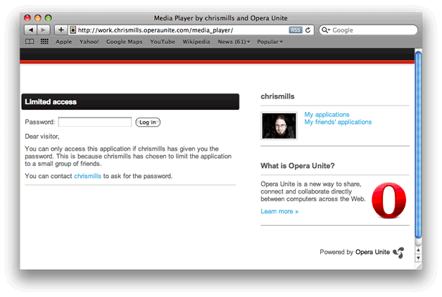
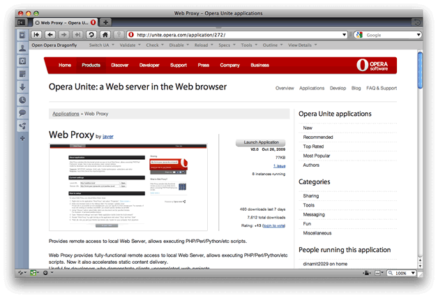
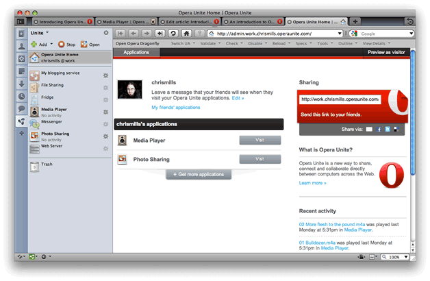

Introducing Opera Unite in Opera 10.10
24th April 2012: Please note
Starting with Opera 12, Opera Unite will be turned off for new users and completely removed in a later release. If you're interested in building addons for Opera, we recommend going with our extensions platform — check out our extensions documentation to get started.
Introduction
Opera has just released Opera 10.10, featuring Opera Unite — follow the link to find out more, and install it.
Opera Unite is a collaborative technology that uses a compact server inside the Opera desktop browser to share data and applications. You can write Opera Unite applications (using open Web standards) that use this server to serve content to other Web users. You can also install applications created by other people, found on unite.opera.com.
Why is this exciting? Well, it allows you to share your photos, MP3s and other data, communicate with friends and collaborate with them on games or documents — all without the need for any third-party Web sites/applications to be involved at all. The only thing you need to serve content and share applications is Opera Unite installed on your machine (and for it to be turned on); your friends can consume your content and applications from any browser they choose, and you are only limited by the creativity of your application development.
In this article, I first present a tour of Opera Unite, with details of how to activate it, how to install an Opera Unite application, and how to use those applications to collaborate with your friends and colleagues. If you want to find out more about developing your own Opera Unite applications, read our Opera Unite developer's primer.
Running an Opera Unite application
Once you’ve installed your shiny new Opera 10.10 build, open up the Panels (see the left hand side of Figure 1) and click on the Opera Unite panel tab (see the highlighted tab in Figure 1).
Figure 1: The Opera 10.10 Unite Panel
You can also get to your Unite panel by clicking the Opera Unite icon in the icon tray on the very left of the browser window and selecting Manage Applications (see Figure 2), or by selecting Tools > Opera Unite Server > Manage applications.
Figure 2: The bottom left-hand corner Opera Unite icon, when enabled
A number of Opera Unite applications come preinstalled in Opera 10.10, as you can see listed in Figure 1. To run one, simply double-click on the application (I’ll choose Media Player for now). If this is your first time running Opera Unite, you’ll see the Opera Unite Settings dialog box, which will prompt you to log in to your Opera account — see Figure 3.
Figure 3: Logging in to your Opera account
Your Opera account is the same account that your use to log in to my.opera, or Opera Link.
Enter your details and click OK, and you will be taken to the Opera Unite Settings dialog. You’ll now be prompted to choose a name for your computer from a drop-down list, as shown in Figure 4. Figure 4: Choosing an Opera Unite identification name for your computer
This name is basically your computer’s identity on the Opera Unite system — this is the URL that your contacts can go to if they want to make use of your Opera Unite applications, and share them with you.
The next dialog box you’ll get to is the Media Player settings dialog box — see Figure 5.
Figure 5: The Media Player settings dialog.
If you don’t already have an Opera account, you can easily create one by clicking the I do not have an account button and filling in the short form that appears.
In the application’s settings dialog, you don’t need to do anything except use the file chooser to select the folder you want to share music from. When you click OK, the application will open in the browser window, as seen in Figure 6.
Figure 6: The Media Player application running in the browser.
So what about sharing and collaboration?

Figure 7: Opera Unite administrator options.
All well and good so far — you can now click on the controls to play your songs. But what about sharing the application with your friends? Note the contents of the right hand panel of the Media Player window (see Figure 7):
- Public access: Everyone can access it freely without a password
- Password protected: Your friends and colleagues can access it, as long as they have the password to access that application.
So, let’s try it out — send your friend(s) the Sharing URL; if they access your application using this URL, it will bring up the screen shown in Figure 12, provided of course, you’ve got it set to Public access.
Figure 8: The Media Player application being shared with a friend running Firefox!
If you haven’t got any friends, test it out by opening another browser on your machine, and point it to the URL.
If you have your application set to Password protected, upon accessing the URL your friends will see the screen shown in Figure 9.
Figure 9: The application password screen, shown in Safari.
If this is the case, you need to send your friends the password shown on your application administration screen. On entering it, they will get to the application.
Your friends can now double-click on the track names to hear them, straight from your hard drive! This is great for parties — you can get access to all your friends’ playlists without them needing to bring anything round to your house, or upload them to any kind of server.
Opera Unite uses a special URL system. To identify your computer uniquely in the system, it uses the name you chose for your computer, followed by your unique identifying name, followed by the standard server domain, for example http://mymac.chrismills.operaunite.com/media_player/ . In this case the device running Opera Unite has been called mymac (you can have multiple devices under one user name), and the user name logged in to Opera unite is chrismills.
http://admin at the beginning of the URL, ie >http://admin.mymac.chrismills.operaunite.com/media_player/, you can access the administration page for the application, which allows you to alter security settings, etc. But only if you are the person running the applications. You’ll need an admin password if you try to access this from a different computer to the one running your applications (this can be got from the Unite Home Page — see later on). You will get to the admin page automatically upon running the application if you are using the Opera Unite browser the applications are running in, but in this case, you probably are the administrator!
Installing new applications from unite.opera.com
There are a host of other applications available at the Opera Unite home page — navigate to this page now, and click on one of the applications at the bottom of the page to display more information about that application (see Figure 1). Click on the Launch application button and it will either start to download — in which case you’ll see a progress box, or it will inform you that the application is already installed and give you instructions to access it from your browser, or reinstall it if you so wish.

Figure 10: An Opera Unite application on the Opera Unite home page
Finding your way around Opera Unite
Double click on the Opera Unite Home icon — this brings up your Opera Unite homepage — see Figure 11.

Figure 11: The Opera Unite homepage
Your home page contains:
- The URL that your friends need to access to get to your applications. When they go to your home page they can choose form a list of the applications you currently have running as mentioned before,
- A link to the Opera Unite web site, where you can download more applications and find more information — Get more applications
- A list of the applications you have running
- A link to view your the applications your friends have running
- A list of recent activity, ie, what people have been doing with your applications recently
You can also get to your Opera Unite home page by
- Clicking the Opera Unite icon in the bottom left hand corner of your browser (remember Figure 2) and selecting Opera Unite Home
- Selecting Tools > Opera Unite Server > Oper Unite Home
The Opera Unite menu
Let’s revisit Figure 2, so we can explain the options there:
Figure 2: The bottom left-hand corner Opera Unite icon, when enabled
The options here are:
- Discover Local Opera Unite Features: when checked, your browser will automatically detect other Opera Unite users on the same network, all done using UPnP
- Opera Unite Home: Opens up your Opera Unite Home page
- Configure…: Opens the Opera Unite Settings dialog, if you need to reconfigure your settings
- Show Status: gives you various bits of status information about your Opera Unite install, including applications running, mount of data traffic, etc.
- Manage Applications: Opens/closes the Unite panel on the left hand side of your browser window.
- What is Opera Unite?: Takes you to the unite.opera.com web site.
Summary
So that’s a wrap. I’ve introduced you to Opera Unite, given you a tour of the new property, and shown you how it works. If you are a developer wanting to write Opera Unite applications, the best place to start is our Opera Unite developer’s primer.
You might also want to have a look at our Opera Unite corner on Dev.Opera, where you can find documentation for building your own Opera Unite applications.
Now it’s up to you — we invite you to start playing with the available Opera Unite applications and let us know what you think.
Chris Mills

Chris Mills is a web technologist, open standards evangelist and education agitator, currently working at Opera Software in the developer relations team. He spends most of his time writing articles about web standards for dev.opera.com and other publications (such as .net mag and A List Apart), giving talks at universities and industry conferences, and lobbying universities to improve their web education courses. He believes that education is the answer to everything, but in particular he is passionate about using education to improve the overall content quality, accessibility, usability and future-viability of the Web.
He is the creator of the Opera Web standards curriculum, contributor to the WaSP InterACT project, and coauthor of InterACT with web standards: A Holistic Approach to Web Design. In August 2011, he also accepted the position of co-chair of the newly-formed Web Education Community Group.
Outside work he is a heavy metal drummer, proud father of three and lover of good beer.
This article is licensed under a Creative Commons Attribution, Non Commercial - Share Alike 2.5 license.
Comments
The forum archive of this article is still available on My Opera.
No new comments accepted.